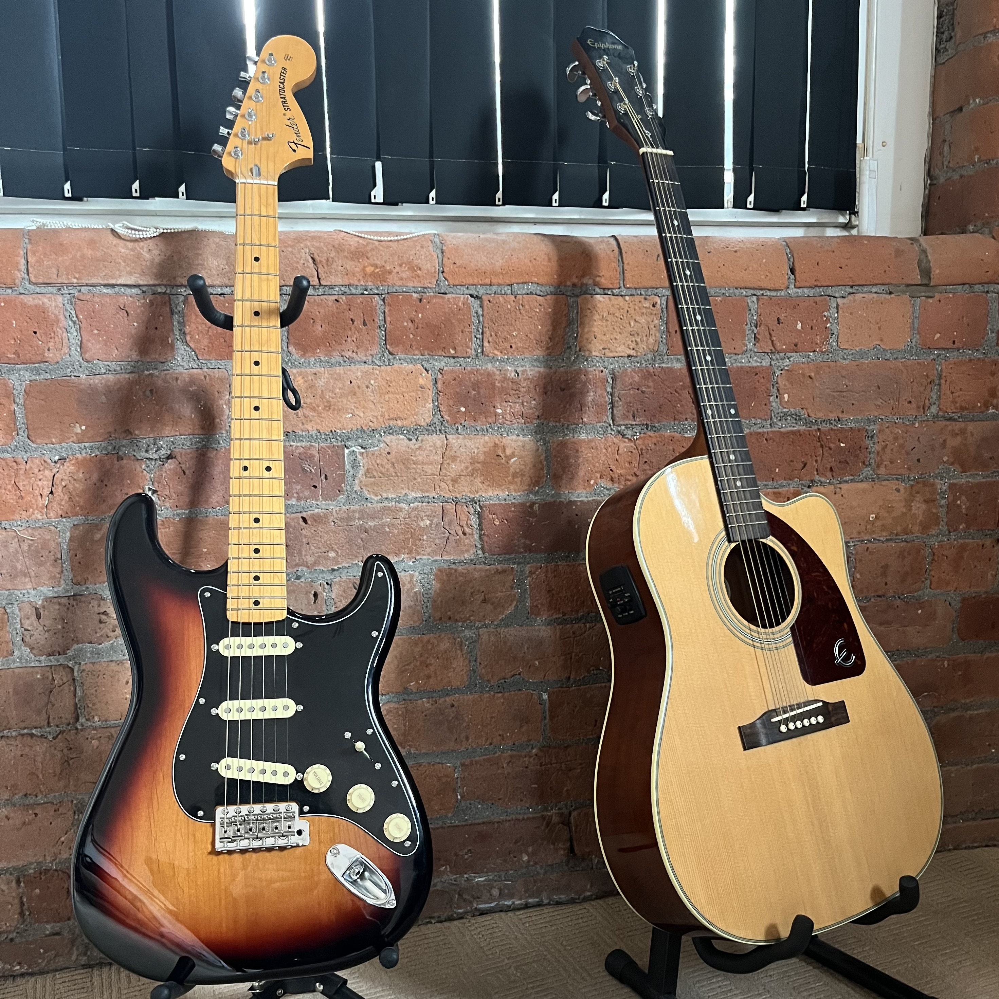

Hi I'm Joe 👋 (he/him)
I'm an enthusiastic and driven Software Developer specialising in high performance systems and Rust development. I studied Computer Science at UoM and am now searching for a job in SWE around the Manchester area, or remote.
I fell in love with Manchester, the city and it's people, during my studies and I'm very lucky to be able to stay here and persue my dreams.
You can find the projects that I lovingly write over on my GitHub. Live demos of certain projects will also be available soon on this website.
I am currently searching for full-time employment around the Manchester area, or remote. My resumé can be found here. It's handwritten by myself using typst!
If you want to reach out to me for any opportunities, send me an email! joe.gloach@gmail.com.
In my spare time, I play the songs that I love on my guitars.  I also love cooking for myself, friends, and family (and then eating the result). You might also find me on the Squash court too!